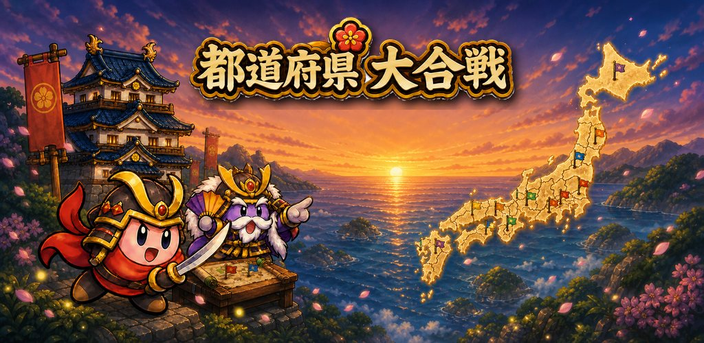
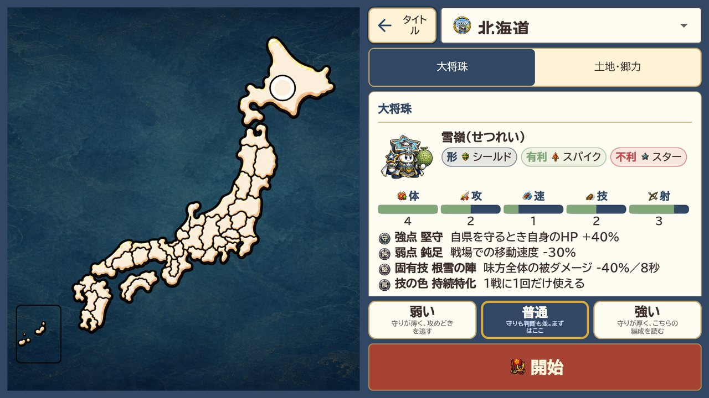
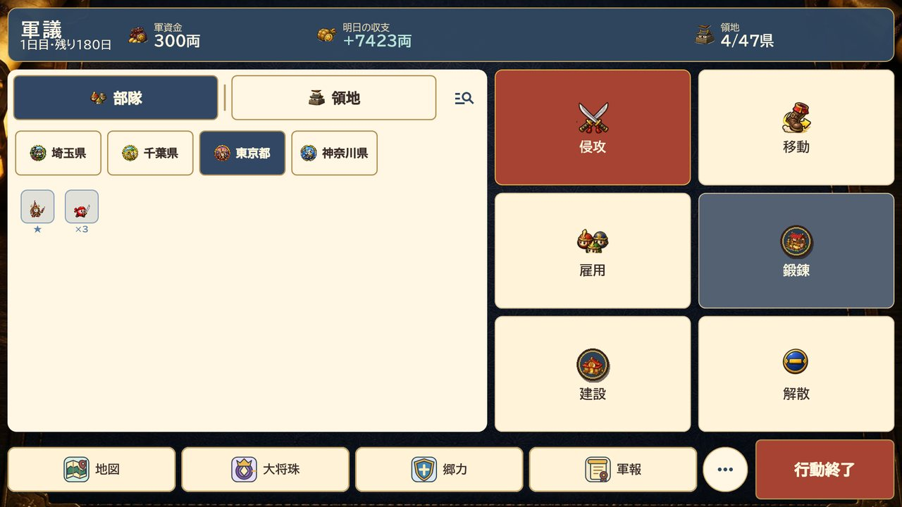
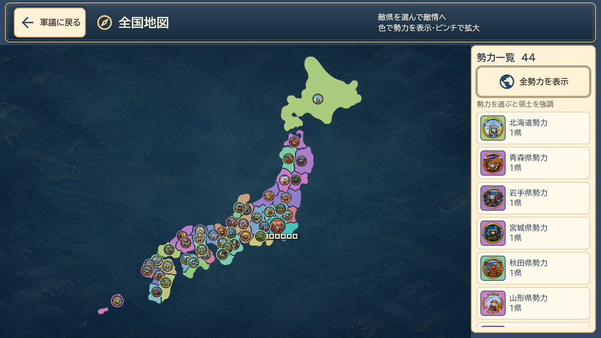
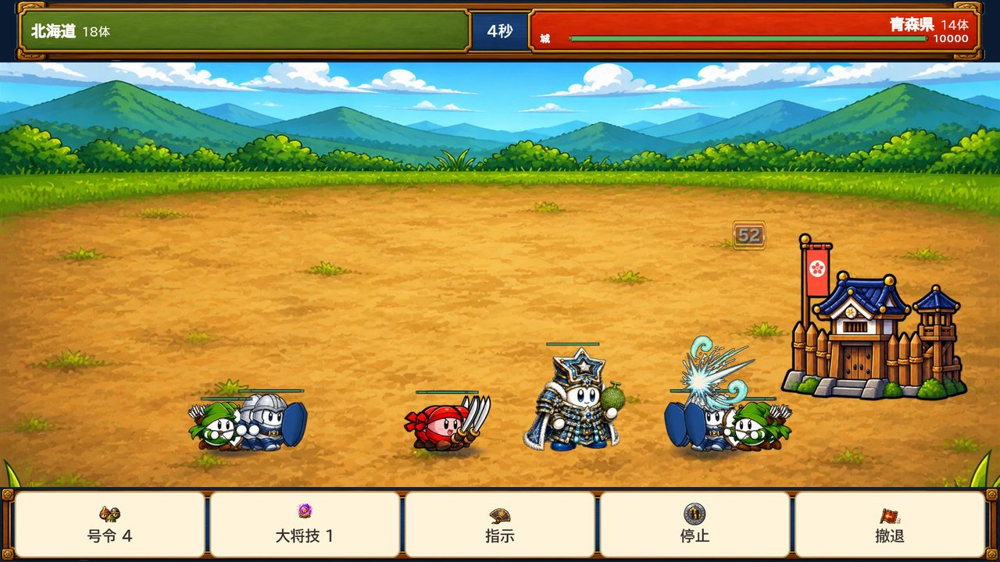

47都道府県を、
ひとつにする。
軍議で兵を整え、隣の県へ出撃し、号令で戦場をひっくり返す。
ひとり用の、腰を据えて遊ぶ戦略シミュレーションです。
- 無料
- 広告なし
- アプリ内課金なし
- 通信しません
- 権限の要求なし

一日ずつ、国を広げていく
好きな都道府県からはじめて、軍議で内政を回し、頃合いを見て隣国へ攻め込みます。 1日の行動を終えるたびに、他の国も同じように動きます。

47の県、47の大将珠
どの県からはじめるかで、率いる大将珠も、隣り合う国も変わります。 得意・不得意がはっきりしているので、同じ手は通じません。
- 県ごとに固有の大将珠と固有技
- 相性のある「形」と「色」
- 難易度は 弱い／普通／強い の3段階

軍資金をどこに使うか
兵を雇うか、鍛えるか、建物を建てるか。 収入は所領の数と建物で決まるので、攻める前に足場を作るかどうかが毎日の判断になります。
- 雇用・鍛錬・建設・移動・侵攻
- 収入は翌日に入る
- 地図から他国の動きを確認できる

動いているのは、自分だけではない
47の県それぞれに主がいて、こちらが1日を終えるたびに、 向こうも兵を雇い、隣を攻めます。地図の色が日ごとに塗り変わっていきます。
- 勢力ごとに色分けされた全国地図
- 勢力を選ぶと、その領土を強調
- 敵県を選んで敵情を確認できる

崩れかけた戦線を、号令で立て直す
戦いは自動で進みますが、見ているだけではありません。 押し込むか、守りを固めるか、撤退するか。判断の一手で結果が変わります。
- 出撃のたび、持ち込む号令を2つ選ぶ
- 号令と大将技は、任意のタイミングで
- 分が悪ければ撤退して兵を残す
このゲームについて
テストに参加してくださる方を探しています
Google Play のクローズドテストとして配信しています。 参加には、Google Play にログインしている Google アカウントのメールアドレスが必要です。
参加のしかた
- 下のボタンから、Google アカウントのメールアドレスを添えてご連絡ください。
- こちらでテスターとして登録し、参加用のリンクをお送りします。
- リンクから Google Play を開き、インストールしてお試しください。
いただいたメールアドレスは、Google Play のテスター登録と、テストに関するご連絡にのみ使用します。 テスト終了後に削除し、ほかの目的には使いません。
ご利用にあたって
- 対応端末 Android（iOS 版は準備中です）
- 画面の向き 横向き
- 対象年齢 13歳以上（子ども向けのアプリではありません）
- お問い合わせ prefectural.battle.games@gmail.com
本ゲームは都道府県の名称を題材にしたフィクションです。実在の自治体・団体・人物とは関係がなく、 各都道府県およびその関係機関が監修・提供するものではありません。 登場する能力値や勢力の強弱はゲーム上の設定であり、実際の地域とは一切関係ありません。